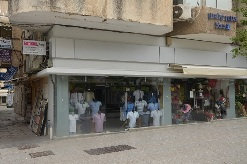
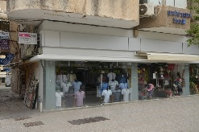

Эндометрия
– Внутренняя слизистая оболочка тела матки выстилающая полость матки и обильно снабжённая кровеносными сосудами.
Спираль
– Спираль или ВМС (внутриматочное средство) - это небольшое приспособление из пластика с медью,
вводимое в полость матки. ВМС - достаточно эффективный метод предохранения от нежелательной беременности,
хотя его эффективность несколько ниже, чем у противозачаточных таблеток. Срок использования различных
спиралей варьируется от 3-х до 5 лет.
Кондилома
– Вирусное заболевание, возбудителем которого служит широко распространенный вирус папилломы человека, располагающийся в клетках кожи половых органов. Заражение им происходит при контакте с инфицированной кожей или слизистыми, то есть половым путем, или во время родов. После внедрения вирус может длительное время просто находиться в организме. А при благоприятных для него условиях резко размножается, вызывая разрастание клеток кожи и приводя к появлению кондилом - мягких, мясистых или нитевидных образований телесного цвета на коже и слизистых оболочках половых органов, размером от 1 мм до нескольких сантиметров.
Климакс
– Физиологический процесс в женском организме, характеризующийся нарушением выделения гормонов,
которые определяют деятельность яичников и гипофиза, и прекращением менструаций.
Приём
Вопрос: Что входит в стоимость приёма?
Ответ: Осмотр, ультразвуковое исследование и назначение лечения.
Анализы
Вопрос: Входит ли стоимость анализа в стоимость приёма?
Ответ: Анализы в стоимость приёма не входят, так как выполняются в лаборатории.
Вопрос: От чего зависит стоимость анализа?
Ответ: Стоимость зависит от вида анализа (цены назначены лабораторией).
Вопрос: Если в процессе лечения нужно повторить анализ, надо ли оплачивать его стоимость?
Ответ: За каждый анализ нужно платить лаборатории отдельно.
Установка спиралей
Вопрос: Что входит в стоимость установки спирали?
Ответ: Цена включает: осмотр, ультразвуковое исследование, установку спирали и спираль.
Вопрос: От чего зависит цена установки спирали?
Ответ: Цена зависит от вида спирали.
Вопрос: Почему надо наблюдать беременность?
Ответ: Когда женщина узнаёт о своей беременности ей необходимо встать на учёт в женскую консультацию
для последующего наблюдения. Женская консультация даёт возможность максимально оценить здоровье женщины.
Даже если Вы чувствуете себя хорошо всё равно необходимо встать на учёт.
Никогда нельзя знать точно какие проблемы могут возникнуть, а наблюдение врача позволят,
как можно раньше заметить тревожные признаки. В исследования включаются лабораторные анализы.
Берётся анализ мочи, средняя порция и исследуется на содержание в ней сахара и белка.
При таком методе исследования можно обнаружить скрытую инфекцию мочевых путей и при необходимости начать лечение.
Имеет значение такие анализы, как биохимический и клинический анализы крови.
Эти анализы дают возможность выявить сахарный диабет и анемию у беременной.
Ультразвуковое исследование даёт возможность более внимательно следить за здоровьем ребёнка.
Также с помощью этого обследования можно узнать, как расположена плацента, в норме ли количество околоплодных вод.
Вопрос: Нужно ли идти к врачу при болях внизу живота во время беременности?
Ответ: Боль в животе — далеко не всегда признак угрозы прерывания беременности или какой-либо патологии,
требующей хирургического вмешательства. Довольно частым источником боли являются спазмы желудка и кишечника,
которые возникают из-за неправильного питания. Появлению болей способствует воспаление слизистой кишечника и
дисбактериоз кишечника. При выполнении физических упражнений или работы, требующей физической силы также
могут появиться боли в животе, связанные с излишним напряжением мышц брюшного пресса.
Необходимо просто расслабиться и отдохнуть, а в следующий раз уменьшить степень нагрузки.
И все же иногда боли в животе — это признак акушерского неблагополучия.
Проблемы могут быть связаны как с течением беременности, так и с общим состоянием здоровья.
В большинстве случаев самой беременной сложно понять причину появления болей в животе.
Поэтому важно иметь возможность в любое время связаться с врачом, который наблюдает за течением беременности,
обсудить свое самочувствие, что позволит справиться с излишними страхами, при необходимости — провести лечение и
благополучно доносить беременность.
Вопрос: Какие виды спиралей наиболее распространены?
Гормональные спирали
Мирена - средство внутриматочной гормональной контрацепции, которое обеспечивает защиту от нежелательной беременности в течение 5 лет. Она представляет собой внутриматочную систему Т-образной формы, в вертикальной части которой находится цилиндрический полиэтиленовый контейнер с левоноргестрелом - синтетическим аналогом женского полового гормона прогестерона. Сразу после введения Мирены он через специальную мембрану начинает выделяться в полость матки. При этом суточная доза гормона настолько мала, что не оказывает системного воздействия на организм женщины, обеспечивая лишь местный контрацептивный эффект.
Негормональные спирали
К внутриматочной негормональной контрацепции относятся спирали, которые вводятся в матку. Это метод длительного и обратимого характера. Современные спирали производятся из безопасного пластика, обмотанного специальной проволокой, которая повышает надежность и длительность использования. Защитный эффект спирали основывается на том, что она делает невозможным прикрепление оплодотворенной яйцеклетки к стенке матки.

 
